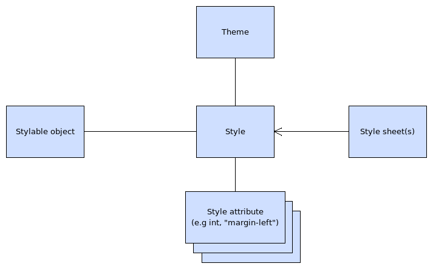

| Home · All Classes · Main Classes · Deprecated |
A style in MeeGo Touch contains key-value pairs ("attributes") that are used when the stylable object is drawn to the screen. A style attribute always has the following properties:
For example, a good style attribute could be something like pen colour, margin, or text font. Style attributes are defined in the source code and their values are defined in the style sheet(s).
MeeGo Touch styles can be inherited. It means that the derived style can introduce new style attributes on top of the 'base' style and it can even override the values for the attributes that are being derived. This behaviour is defined at the source code level by software designers.
Style system components have the following responsibilities:

Basic building blocks of the styling system
Styling in MeeGo Touch always includes at least the following steps:
These steps ensure that you have a configurable style for your stylable object. It provides a type-safe class for application developers to access the style, while allowing the UI designers to configure the styling as needed through the style sheets. This is the basic form of styling in MeeGo Touch.
| Copyright © 2010 Nokia Corporation | MeeGo Touch |